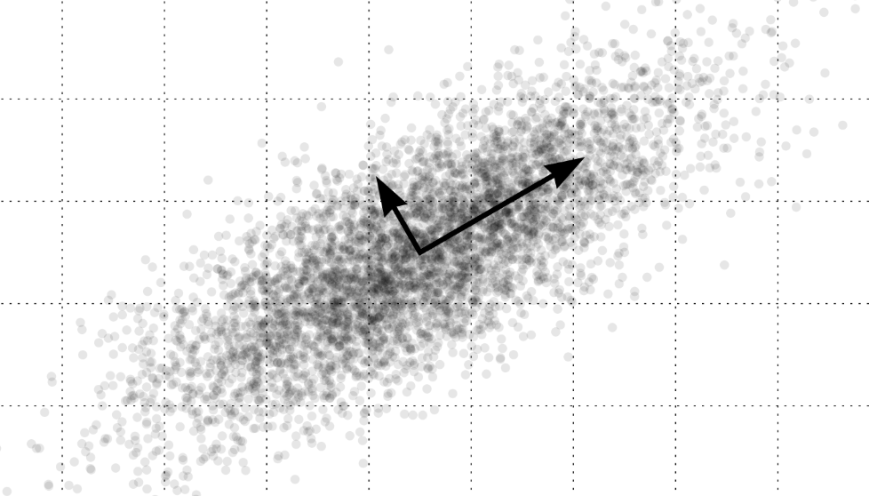
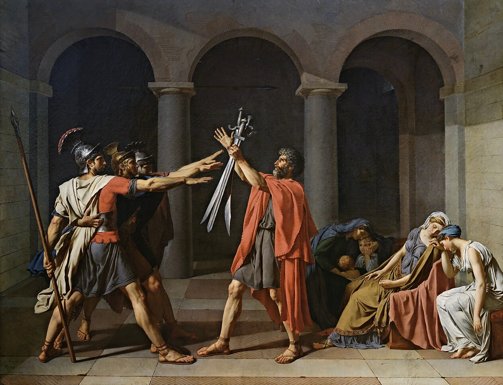

Qianpu Chen
👋 Hi, I'm Qianpu —
I build in the space between rigor and imagination — where code, theory, and art intertwine.
Research Interests
Academic Journey
PhD Candidate in Computer Science
Leiden University, The Netherlands
2025.09 - Present
Master of Computer Science: Data Science
Leiden University, The Netherlands
2023.09 - 2025.03
Honours Class Future Foresight
Leiden University, The Netherlands
2023.10 - 2024.02
Grade: 10/10
Bachelor of Software Engineering
Tianjin Normal University, China
2020.09 - 2023.06
Work Experience
PhD Candidate
Leiden University, The Netherlands
2025.09 - Present
Chief Technology Officer
LUDev, The Netherlands
2024.09 - Present
Teaching Assistant - Introduction to Deep Learning
Leiden University, The Netherlands
2024.09 - 2025.02
Honors & Awards
Skills
Programming Languages
Full Stack Development
Backend
Frontend
AI & Machine Learning
Deep Learning
Advanced AI
Frameworks & Tools
Theoretical Computer Science
Theory & Algorithms
Advanced Concepts
Game Development
Engines & Tools
Game AI
Interests
Fragments

The Art of Ignoring Most of the World
"To see a world in a grain of sand."
Reality seems to enjoy excess. Pixels, tokens, frequencies, variables. Every dataset arrives swollen with dimensions, as if the universe believes that the more coordinates it provides, the more impressive it will look. Machine learning is less sentimental. It spends a great deal of its time trying to quietly remove most of them. This activity is known, somewhat politely, as dimensionality reduction...

The Aesthetics of Intelligence
"Studying AI therefore tells us something not only about machines, but about how humans understand their own minds."
Artificial intelligence is often introduced as a technical field. Papers describe architectures, datasets, benchmarks, and performance curves. The landscape of AI is usually divided into symbolic methods, machine learning techniques, reinforcement learning systems, generative models, and more recently, world models. From the outside, AI can look like a toolbox. From the inside, it begins to look more like philosophy...

Shadows and Vectors
"We had the experience but missed the meaning."
Machine learning is often introduced through many different entry points. Some accounts begin with artificial neurons and early attempts to mimic the brain. Others start from linear algebra, constructing the field from vectors, matrices, and optimization. Still others frame intelligence through probability, describing learning as inference under uncertainty. At first these appear to be different stories about the same field. Different doors into the same building...